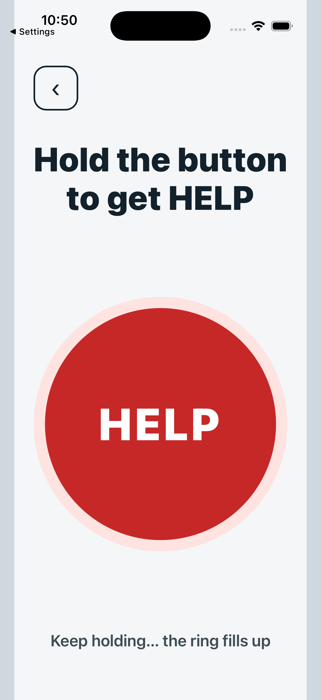
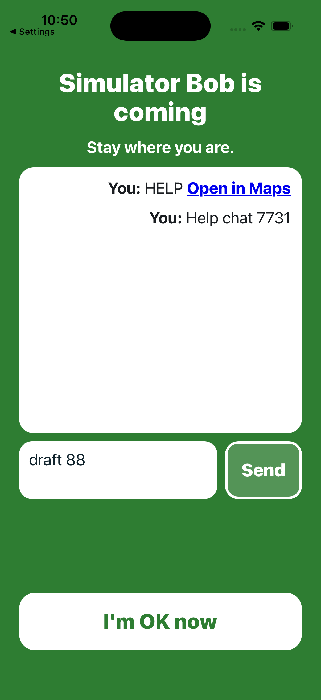

Cuberoot Systems · Large-print guide
FIDUNIO
Complete User Guide
These instructions describe FIDUNIO 1.1.88. The App Store, TestFlight, Android download and web app can be on different releases. Check the version shown in Settings > About. The pictures are real simulator screens with fictional accounts, captured on 27 November 2026; they illustrate the shared HELP interface, not delivery guarantees.
HELP at a glance

1. Welcome and getting the right app
FIDUNIO is private, invitation-only messaging for direct and group conversations. It runs on iPhone and iPad, Android and Fire tablets, and the web. An App Store download does not create an account: you still need a personal invitation from a FIDUNIO administrator.
On iPhone or iPad, use the Apple App Store listing. TestFlight is a separate channel for testing newer builds. On Android or Fire, download the signed APK from Cuberoot. The web app is available from the FIDUNIO link on Cuberoot.
HELP alerts your chosen FIDUNIO contacts and lets you exchange messages with them. It does not place a telephone call or contact emergency services. If you need emergency services, use your phone's emergency calling service.
- Keep your account password and six-digit FIDUNIO PIN private.
- Keep an encrypted Recovery File somewhere outside the app.
- Check Settings > About before comparing screens with this guide.
2. Join, sign in and unlock
- Open the personal Join FIDUNIO link your administrator sent. Do not forward it: an invitation is single-use and expires.
- Enter your display name, email, password and six-digit FIDUNIO PIN, then choose Join FIDUNIO. Use Sign In for an existing account.
- On a new installation, follow Restore Messaging using your existing account password and PIN when requested. This restores the same encryption identity.
- When FIDUNIO locks, enter your PIN or use the configured biometric unlock. Sign-in and local unlock are separate steps.
Version 1.1.83 and later safely handle a missing local PIN record: FIDUNIO asks for password plus your existing encryption PIN, verifies them and restores that same local PIN record. A wrong password/PIN leaves the app locked. Do not choose a replacement PIN to bypass this screen.
The lock grace period also covers time spent in another app. Returning within the selected period can remain unlocked; a fresh start asks for unlock. Immediately and Lock Now still lock at once. Change this in Privacy & Access.
Before removing or resetting a misbehaving installation, save its error details and your Recovery File. If you forget the password, use Forgot Password, then recover secure messaging with the existing PIN. Administrators cannot supply your PIN.
3. Messages, attachments and replies
- Open Messages and choose a conversation, or use + to start a direct conversation or a group.
- Type in the message box and tap Send. On iPad, the list can remain on the left while the chat opens on the right.
- Use the attachment control to choose a photo, video, voice/audio item or file. Review the selection before sending.
- Press and hold a message for available actions such as Copy, Select Text, reactions, Reply and deletion. Copy takes message text; Select Text lets you copy a portion.
The 1.1.82 series added pasted images and keyboard rich-content handling. Actual sticker/GIF behavior depends on the keyboard and platform. Android offers camera capture and library selection. iPhone and iPad use their own camera/library controls. If the keyboard supplies no attachment, use the regular attachment control.
Tappable HTTP/HTTPS addresses ask Open this link? before leaving FIDUNIO. Cancel keeps you in the chat. Link previews are deferred. HELP location links use Open in Maps directly.
Reply is available on eligible group messages. A reply cannot preserve a disappearing target. Reactions and replies remain part of the existing conversation.
Large attachments on Wi-Fi only uses a 5 MiB threshold. When network type cannot be verified, an explicit Send Anyway decision may be needed. Cancel stops that selection before reading, encrypting or uploading it.
4. Understand message status
HELP is sent refers to the server's alert record. The encrypted location card and typed messages have their own sending status. A red HELP screen alone does not prove that a helper's phone sounded.
| Label | Meaning / next step |
|---|---|
| Queued | The encrypted Outbox is waiting for connection or reconciliation. It is not confirmed sent. |
| Sending | A send is in progress. It does not prove delivery. |
| Sent | The authoritative message has been accepted. It does not prove that the recipient read it. |
| Delivered / Read | Receipt information from the recipient's authorized messaging lifecycle. Read is not proof that a HELP contact can respond. |
| Not sent - tap to send again | On the HELP screen, tap the retry control and check the connection. Confirm the status changes before assuming the text arrived. |
5. HELP: choose your contacts first
- Open Settings > Safety > HELP.
- Tap Choose HELP contacts. Select up to five trusted FIDUNIO members; you cannot select yourself.
- Tap Save and wait for Saved. The chosen profile names appear in the HELP card.
- Return to Messages. The red HELP bar appears when at least one contact is saved. On iPad it is in the left list area.
- Ask each contact to open FIDUNIO and enable notifications on the device they will use. Agree how you will respond before relying on HELP.
With one contact, HELP uses your existing direct conversation. With two or more contacts, it uses the encrypted HELP group named from your profile. The large HELP screen is a view of that conversation, not a separate message history.
If nobody is selected, there is no HELP bar. To change contacts, reopen Choose HELP contacts and Save. Cancel closes the chooser without saving your selection.

6. HELP: check notifications on every device
- If Messages says Turn on notifications to hear HELP., tap Turn on and allow the system prompt.
- If permission was previously refused, use Open Settings and allow FIDUNIO notifications in the device's settings. Return to FIDUNIO afterward.
- In Settings > HELP, a warning such as Bob can't hear HELP yet. means notifications are off or have not been confirmed for that account. Ask the contact to open the app and check them.
- Check sound volume, notification sound and Focus / Do Not Disturb settings. Test with your contacts while everyone is available.
A missing warning is not a delivery receipt or a guarantee of sound. Network availability, permission, registration, Focus and device settings can still affect alerts. Browser capabilities differ from native iPhone/iPad, Android and Fire apps.
The current iPhone/iPad alarm uses a bundled sound with Time Sensitive delivery. Apple Critical Alerts approval is pending; do not assume HELP overrides silent mode or Focus. Android/Fire use the HELP alarm channel and alarm audio settings.
The server is configured to repeat unanswered HELP alerts about every 30 seconds until someone answers or the sender closes HELP. Actual arrival times depend on the network and notification providers. Repeated iPhone/iPad alerts replace the previous notification instead of building a pile.

7. HELP: send an alert
- On Messages, tap the red HELP bar.
- Press and hold the large HELP button for two seconds, until its ring completes. A quick tap does not send.
- Allow location if you want to share it. HELP can be sent even if location is unavailable; the alert and location message are separate.
- Wait for HELP is sent. If it says HELP did not go out, check the connection and hold again.
- Use Type a message and Send to explain what you need. Check the message status. Keep the HELP screen open if useful.
Location is a point obtained when HELP is sent, not continuous tracking. Open in Maps appears when an encrypted location card is available. Without that card the helper may see Location is on its way...; describe where you are in a message if needed.
A photo, video, voice message or file in this conversation appears as a short label on the large HELP screen. Open the regular chat to view the attachment itself.

8. HELP: messages and a response
HELP is sent means the alert was stored. The screen names your chosen contacts and shows the conversation. You can type while waiting. Every message also appears in the regular direct chat or HELP group.
When a contact taps I'm coming, your screen turns green and shows their profile name. Your conversation and unsent draft remain on the screen. This means the contact acknowledged HELP; it is not a location or arrival confirmation.
When you are safe, tap I'm OK now. Wait for the app to confirm closure. This stops unanswered reminders and sends the OK update to the chosen contacts. If closure fails, check the connection and retry.

9. HELP: when you are a contact
- Tap the HELP notification and unlock FIDUNIO if asked. The red screen identifies who needs HELP.
- Use Open in Maps when a location card has arrived. If location is unavailable, read the messages and ask where the person is.
- Tap I'm coming only when you can respond. Your acknowledgement is shared with the sender and the other HELP contacts.
- Use the message box on the same screen to communicate. The same messages remain in the ordinary chat.
- When the sender taps I'm OK now, the alert ends. After that, ordinary chat notifications open the regular conversation.
Version 1.1.88 checks the server for open HELP before deciding where a tapped notification should lead, covering a HELP sent while the app was asleep and its chat notification tapped first. This check may take several seconds. It still requires a working connection.
Opening or unlocking FIDUNIO can also present an unanswered incoming HELP. If a selected alert has already closed, the screen can say This HELP is over.

10. HELP: privacy and practical limits
Message text and the shared location card travel inside the existing end-to-end encrypted conversation. The HELP server handles operational metadata: sender, selected helper accounts, alert state, acknowledgements and timestamps. It also handles device routing and reachability metadata. Do not describe the entire alert record as encrypted message content.
HELP notifications can display the sender's profile name and short status, such as HELP, is coming or is OK now. They do not contain the encrypted conversation text or location coordinates.
The normal chat can include earlier conversation history. The large HELP view focuses on the current HELP and recent messages. Closing an alert does not delete the regular encrypted conversation. The server's alert-metadata cleanup policy is separate from chat retention.
Use HELP with people who have agreed to respond. It depends on connectivity and their device settings. It is not an emergency-service dispatch system and does not guarantee a response.
11. Groups and earlier history
Choose New Group, name the group and select members. Use Group Info for the controls available to your role. Group administrators manage membership; an account's rights still come from the server.
A newly added member normally starts at their join boundary. An administrator may explicitly grant retained earlier history from the beginning or a selected date. Removing a member prevents future group access; re-adding does not silently grant messages from the removed interval.
Use Leave Group when available. Owners must resolve ownership before leaving or deleting their account. HELP groups follow the same group encryption and membership boundaries.
12. Disappearing messages, deletion and archive
Choose a disappearing duration before sending an eligible message. Each recipient's authoritative first Read starts their own timer; your local clock is not the deletion authority. Changing a default later does not change a message already sent.
Delete for Me hides eligible content for your account/installation according to the displayed action. Delete for Everyone removes content only when you have that authority. Read the confirmation carefully.
Delete My Sent Messages, in Chat Info or Group Info, removes your own sent messages in that conversation for everyone. It does not grant permission to delete another sender's messages.
Conversation actions can Archive a chat locally or, when authorized, Delete for Everyone. Permanent conversation deletion requires the displayed confirmation, including DELETE when requested. Archive preserves shared history.
13. Settings, accessibility and safety
Choose Auto, Light or Dark appearance and A, A+ or A++ text size in General. Use the size that is comfortable on your device. The iPad layout can show the conversation list and chat side by side.
Privacy & Access controls local lock timing, biometric unlock and Lock Now. Notifications are configured per installation; ordinary-message sender-name visibility is optional. HELP status uses the short alert wording described above.
Safety contains HELP, Blocked Users, Report Abuse and the message safety filter where applicable. Blocking controls direct contact; group membership is managed separately. The local text filter does not inspect encrypted attachment contents.
Abuse Reports is collapsed until opened and highlighted when a report is outstanding for an authorized administrator. Report details are available only within the authorized report workflow.
The obsolete Install FIDUNIO section was removed in 1.1.84. Use the App Store, Cuberoot Android download, or your browser's own Home Screen installation command instead.
14. Recovery File and account maintenance
- Open Settings > Data and use Create Recovery File with your existing PIN.
- Save the encrypted .fidunio file somewhere outside FIDUNIO, such as your Files app. Keep it private and replace it when you make a newer copy.
- To restore, sign in to the same account, choose Restore from Recovery File and follow the password/PIN checks and confirmation.
- Enable notifications and biometric unlock again on the recovered installation when needed.
A Recovery File alone is insufficient: restore also checks your authenticated account, existing PIN, recovery authority and current cloud permissions. It does not grant access to deleted messages or groups you may no longer read.
Use Profile to change your name or password through the displayed verification steps. For Delete My Account, follow Settings and resolve owned groups first. Do not send support your password, PIN, keys or invitation token.
15. For owners and administrators
Create personal invitations in Settings > Invitations. Select the permitted role and expiry, then send the complete invitation letter using Copy Invitation, Email Invitation or Share. Revoke unused invitations when needed.
User Administration exposes only actions allowed for your role. Start Account Recovery creates an account-bound, revocable, single-use recovery opportunity valid for 30 minutes. The member still enters their own password and existing PIN.
Administrators do not receive the member's private encryption key, PIN, messages or attachments. Suspending an account, group administration and account deletion are separate operations.
16. Troubleshooting HELP and everyday messaging
Support: willyros01@gmail.com. Include the version, device, what you tapped and the exact error. Exclude passwords, PINs, recovery material and private conversation content.
| What you see | What to do |
|---|---|
| No HELP bar | Save at least one HELP contact, return to Messages, and confirm the current version. On iPad look in the left list area. |
| A contact can't hear HELP yet | Ask the contact to open FIDUNIO, enable notifications and check system settings. A contact being listed does not prove notification delivery. |
| Location is on its way... | Allow location if appropriate, wait for the encrypted card, or type your location. HELP is not continuous tracking. |
| HELP did not go out | Check internet access and hold again. Do not assume the alert was delivered. |
| Not sent - tap to send again | Use the retry control, check connectivity and confirm the message becomes sent. |
| Notification opens the wrong screen | Record the version, device, alert/chat notification type and whether FIDUNIO was closed or asleep. Preserve the installation and report the result. |
| Missing PIN record | Use the existing password plus encryption PIN. A failed check stays locked; do not reset the device before saving evidence. |
| Unreadable or delayed Settings | Confirm the app version and text/appearance settings. Report the exact section and whether this followed restart or unlock. |